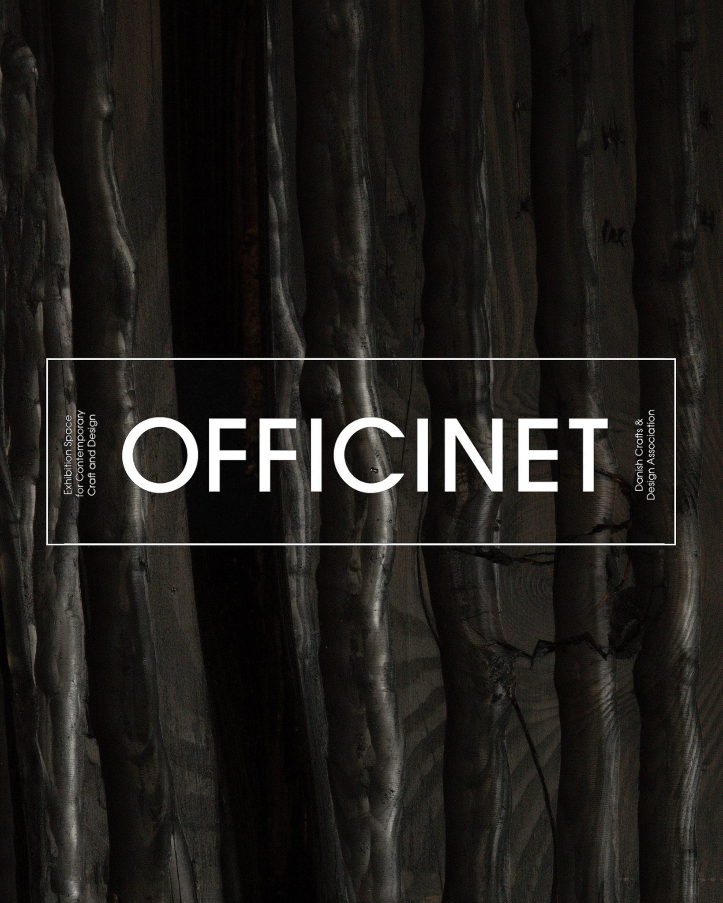
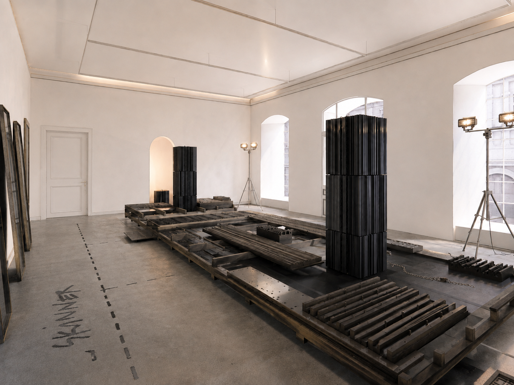
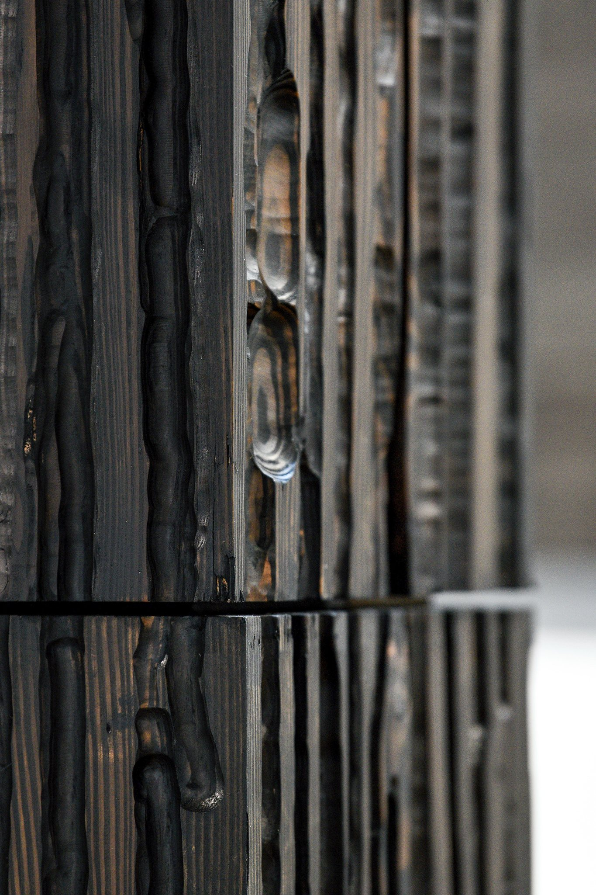
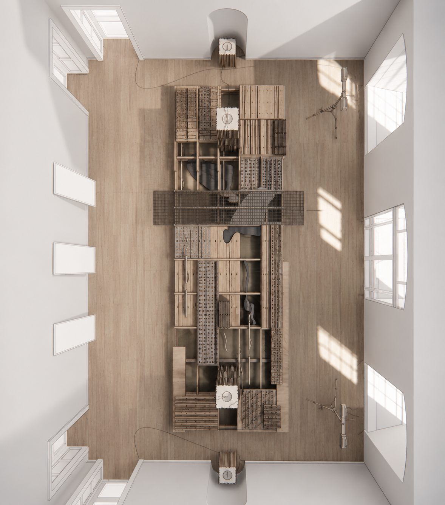
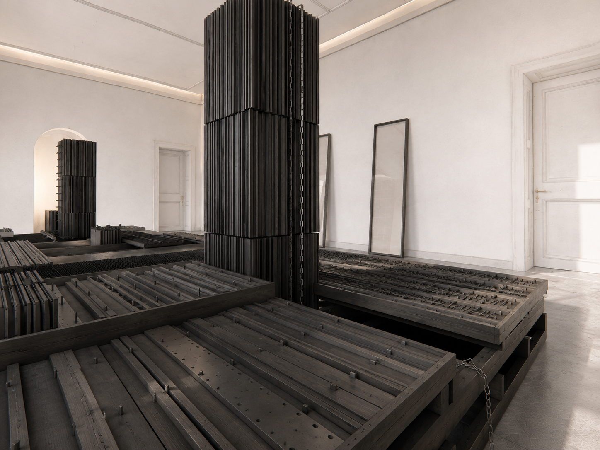
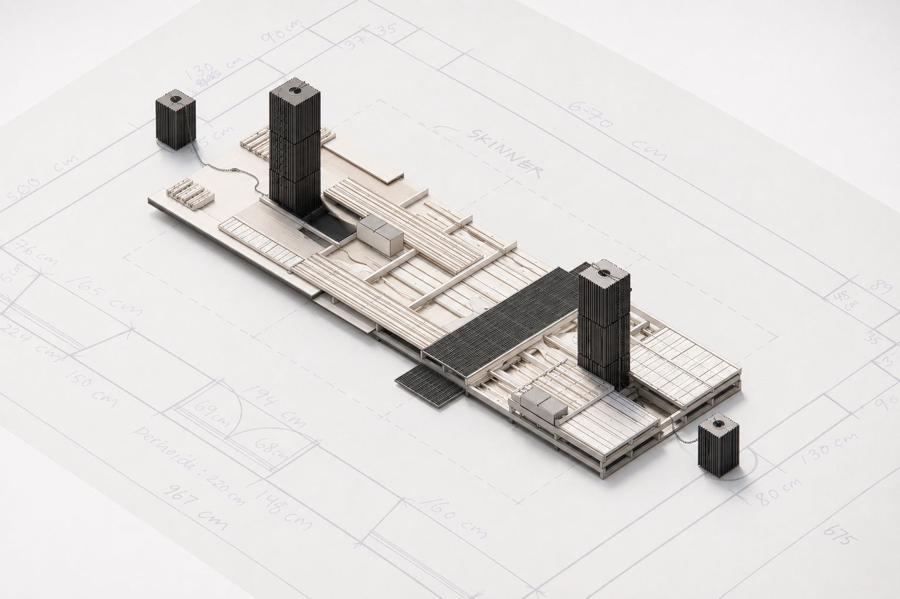
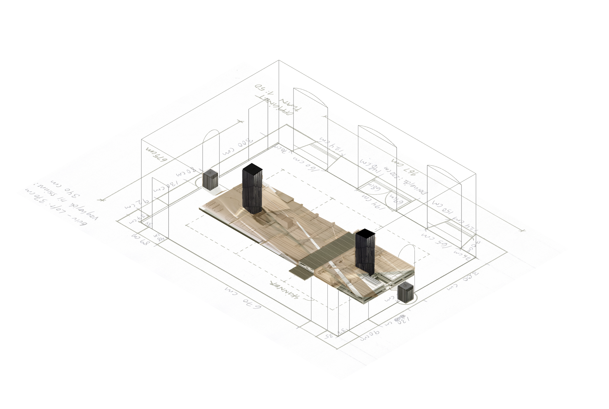
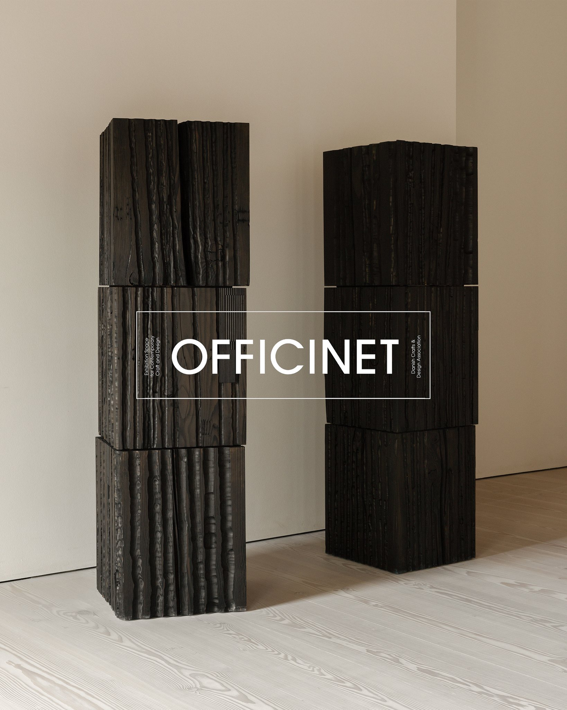

OFFICINET 2027
upcoming exhibition in officinet, Bredgade 66, DK-1260 Copenhagen
"extracting stratigraphies" upcoming exhibition in Officinet in Bredgade 66.
in collaboration with lasse folke - http://lassefolke.dk
Extracting Stratigraphies is a site-specific installation project presented at Officinet, in which a secondary floor and black wooden monoliths constitute a topographical floor landscape situated between raw-material extraction, renovation, and the constructed environment. The project investigates the ways in which the city is materially and geologically entangled with the landscapes from which it is built, while positioning the floor as an architectural, economic, and geological field.
'EXTRACTING STRATIGRAPHIES'
(2027)
in collaboration with
lasse gam folke
.
Officinet, Bredgade 66, DK-1260 Copenhagen K







